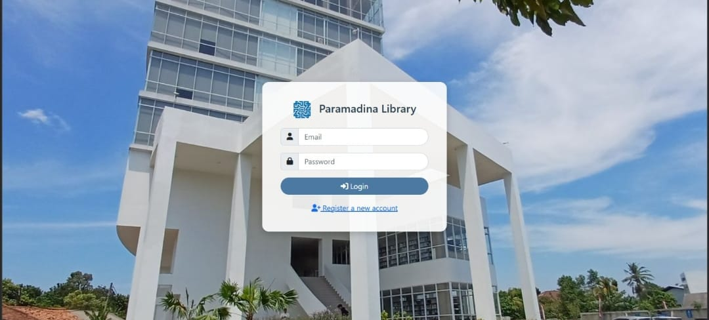
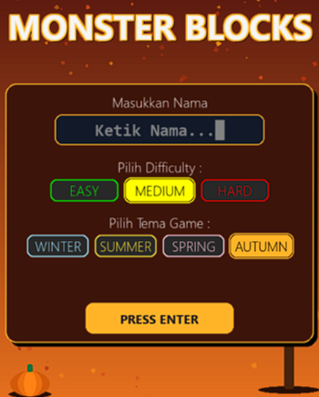
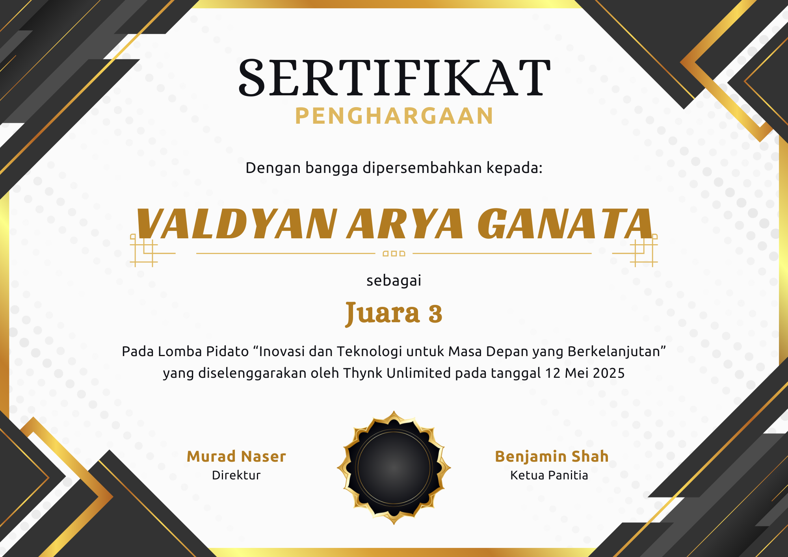

Website Peminjaman Buku Universitas Paramadina yang terdapat 3 role user (Admin, Petugas, Peminjam) agar website lebih efektif dalam penjagaan data serta pengelolaan informasi.
Aplikasi Pencari Barang Hilang di Universitas Paramadina menggunakan sistem Auto-Matchmaking di dalamnya. Sistem ini mencocokkan antara barang yang hilang dan barang yang ditemukan.

Game sederhana berbasis Python dengan Pygame yang mencampurkan unsur game Tetris dengan berbagai elemen tambahan untuk menambah rintangan.
Digital Marketing Intern
Ditempatkan di Lembaga Bahasa LIA sebagai Digital Marketing Intern dengan tanggung jawab dalam mendukung dan mengembangkan strategi pemasaran digital untuk meningkatkan kehadiran serta visibilitas perusahaan di dunia digital. Berperan dalam merancang, membuat, dan mengelola berbagai konten untuk media sosial, serta mencoba berbagai strategi digital marketing yang sesuai dengan target audiens. Selain itu, melakukan analisis terhadap performa setiap konten yang dipublikasikan untuk mengetahui tingkat engagement, jangkauan, dan efektivitas konten. Hasil analisis digunakan sebagai bahan evaluasi dan pengembangan strategi konten berikutnya agar pemasaran digital dapat berjalan lebih efektif. Turut membantu dalam menjaga konsistensi identitas dan citra perusahaan di berbagai platform digital serta mengikuti tren media sosial untuk menghasilkan konten yang relevan dan menarik bagi audiens.

| Tanggal | Divisi | Acara |
|---|---|---|
| 7-10 September 2026 | Konsumsi | Grha Mahardika Paramadina 2026 |
| 3 Oktober 2026 | Konsumsi | Reformatics 2026 |